Анализ главных компонент
Анализ и визуализация многомерных данных с использованием R
Марина Варфоломеева, Вадим Хайтов
Вы сможете
- Проводить анализ главных компонент при помощи функций из пакета
vegan - Оценивать долю дисперсии, объясненной компонентами
- Снизить размерность данных, оставив небольшое число компонент
- Интерпретировать смысл компонент по их факторным нагрузкам
- Строить ординацию объектов в пространстве главных компонент
- Создавать комплексные переменные и использовать их в других видах анализов
Постановка задачи для анализа главных компонент
Зачем нужен анализ главных компонент?
Когда признаков много, можно представить все объекты как облако точек в многомерном пространстве. Обычно в биологических исследованиях признаки объектов взаимозависимы (между ними есть ненулевая ковариация или корреляция).

Migration by Don McCullough on Flickr
Не все проекции несут важную информацию

black shadows for a white horses / les negres ombres dels cavalls blancs by Ferran Jordà on Flickr
Можно найти оптимальную проекцию, чтобы сохранить максимум информации в минимуме измерений

Cat’s shadow by Marina del Castell on Flickr
Анализ главных компонент (Principal Component Analysis, PCA)
Ординация объектов по многим признакам.
Описание системы взаимосвязей между множеством исходных признаков и ранжирование признаков по важности.
Снижение размерности многомерных данных (dimension reduction) и создание синтетических взаимонезависимых признаков для других анализов (например, для регрессии, дискриминантного анализа)
Пример: Размеры медуз
Данные о размерах медуз Catostylus mosaicus (Lunn & McNeil 1991). Медузы собраны в реке Хоксбери (Новый Южный Уэльс, Австралия): часть — на острове Дангар, другая — в заливе Саламандер.

Blubber jellies! by Kirsti Scott on Flickr
## location width length
## 1 D 6.0 9.0
## 2 D 6.5 8.0
## 3 D 6.5 9.0
## 4 D 7.0 9.0
## 5 D 7.0 10.0
## 6 D 7.0 11.0
## 7 D 8.0 9.5
## 8 D 8.0 10.0
## 9 D 8.0 10.0
## 10 D 8.0 11.0Задача анализа главных компонент
Нужно найти такую трансформацию исходных данных, чтобы “новые” переменные:
- содержали всю исходную информацию
- были независимы друг от друга
- были ранжированы в порядке убывания важности (например, в порядке убывания их дисперсии)
Интуитивно, мы можем добиться этого, если проведем одну ось вдоль направления, в котором максимально вытянуто облако исходных данных. Вторую ось проведем перпендикулярно первой (и они будут независимы).
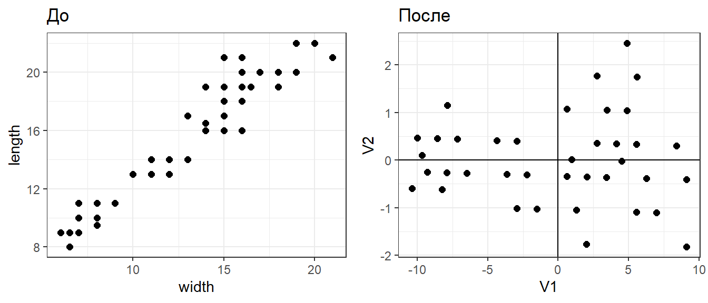
Вспомним, как устроен PCA.

Результаты работы PCA
- Собственные векторы (факторные нагрузки)
- перпендикулярны друг другу (ортогональны, независимы)
- задают главные компоненты — направления новых осей
- линейные комбинации исходных признаков
- упорядочены в порядке убывания дисперсии
- Собственные числа
- показывают дисперсию вдоль главных компонент
- упорядочены в порядке убывания дисперсии
- используются для вычисления доли общей изменчивости, связанной с каждой из главных компонент
- Факторные координаты
- координаты объектов в пространстве главных компонент
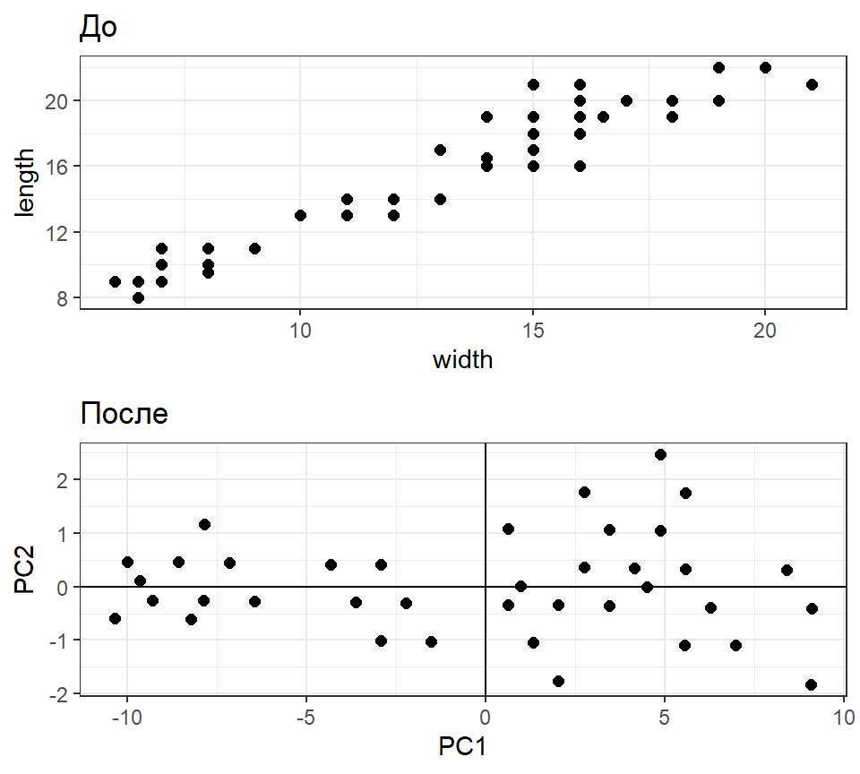
Результаты работы PCA
- Главные компоненты
- новые “синтетические” признаки объектов, которые сочетают несколько исходных признаков
- упорядочены по убыванию доли объясненной изменчивости
- используя разное число главных компонент можно снизить размерность исходных данных
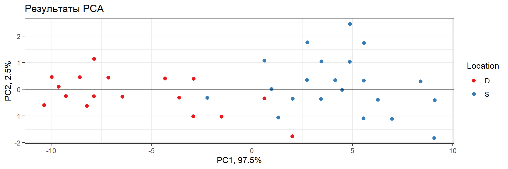
- PC1 — “размер медузы” — больше всего изменчивости
- PC2 — остаточная изменчивость
Действительно многомерные данные
Пример: Потребление белков в странах Европы с разными видами продуктов питания

Paleo Diet by zsoolt on Flickr
Открываем данные
protein <- read.table(file="data/protein.csv", sep="\t", dec=".", header=TRUE)
protein$region <- factor(protein$region)
rownames(protein) <- protein$country
head(protein)## country region redmeat whitemeat eggs milk fish cereals starch nuts frveg
## Al Al Balkans 10.1 1.4 0.5 8.9 0.2 42.3 0.6 5.5 1.7
## At At W Europe 8.9 14.0 4.3 19.9 2.1 28.0 3.6 1.3 4.3
## Be Be W Europe 13.5 9.3 4.1 17.5 4.5 26.6 5.7 2.1 4.0
## Bu Bu Balkans 7.8 6.0 1.6 8.3 1.2 56.7 1.1 3.7 4.2
## Cz Cz E Europe 9.7 11.4 2.8 12.5 2.0 34.3 5.0 1.1 4.0
## Dk Dk Scandinavia 10.6 10.8 3.7 25.0 9.9 21.9 4.8 0.7 2.4Делаем PCA
library(vegan)
prot_pca <- rda(protein[, -c(1, 2)], scale = TRUE)
biplot(prot_pca)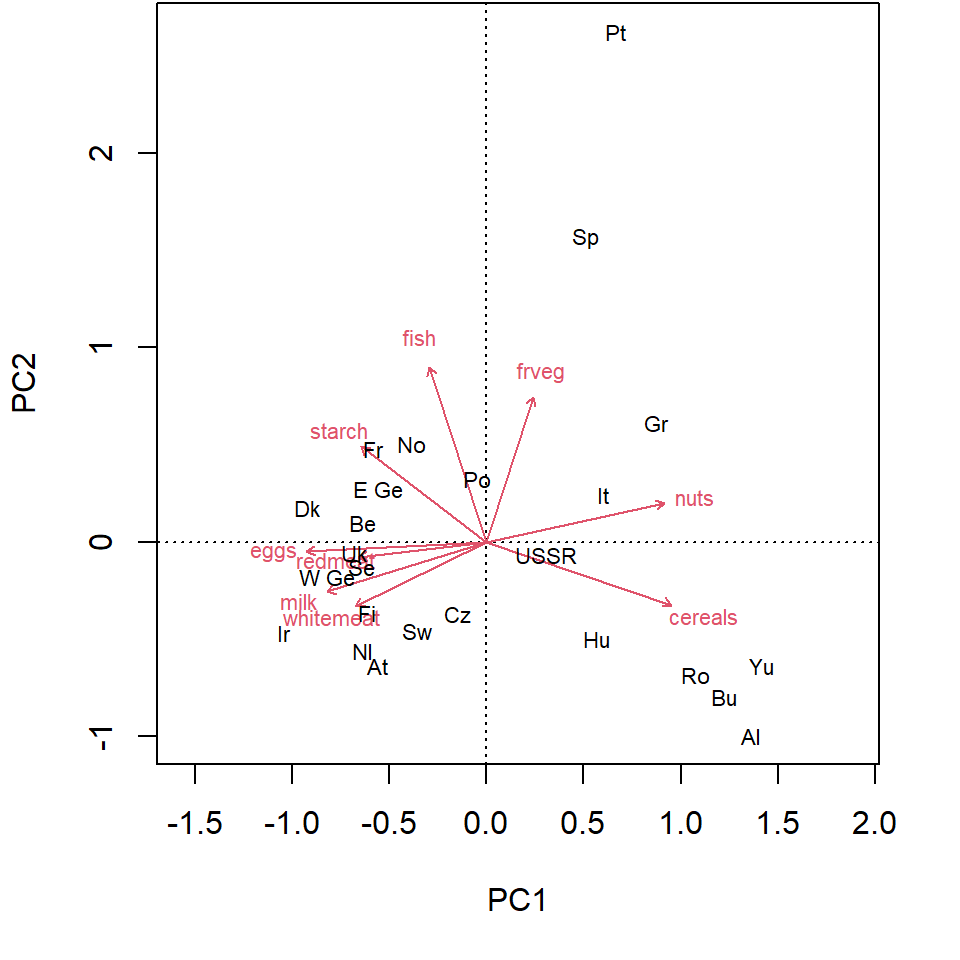
Делаем PCA
library(vegan)
prot_pca <- rda(protein[, -c(1, 2)], scale = TRUE)
biplot(prot_pca)
Разбираемся с результатами PCA
summary(prot_pca)##
## Call:
## rda(X = protein[, -c(1, 2)], scale = TRUE)
##
## Partitioning of correlations:
## Inertia Proportion
## Total 9 1
## Unconstrained 9 1
##
## Eigenvalues, and their contribution to the correlations
##
## Importance of components:
## PC1 PC2 PC3 PC4 PC5 PC6 PC7
## Eigenvalue 4.006 1.635 1.128 0.955 0.4638 0.3251 0.2716
## Proportion Explained 0.445 0.182 0.125 0.106 0.0515 0.0361 0.0302
## Cumulative Proportion 0.445 0.627 0.752 0.858 0.9098 0.9459 0.9761
## PC8 PC9
## Eigenvalue 0.1163 0.0991
## Proportion Explained 0.0129 0.0110
## Cumulative Proportion 0.9890 1.0000
##
## Scaling 2 for species and site scores
## * Species are scaled proportional to eigenvalues
## * Sites are unscaled: weighted dispersion equal on all dimensions
## * General scaling constant of scores: 3.83
##
##
## Species scores
##
## PC1 PC2 PC3 PC4 PC5 PC6
## redmeat -0.774 -0.0919 -0.4039 -0.80718 0.2804 -0.3351
## whitemeat -0.794 -0.3870 0.8467 0.04619 -0.2612 -0.0882
## eggs -1.091 -0.0577 0.2464 -0.39101 0.0689 0.2632
## milk -0.966 -0.3016 -0.5234 0.00414 -0.1744 0.4506
## fish -0.347 1.0569 -0.4360 0.26964 -0.2524 -0.0997
## cereals 1.120 -0.3815 0.1302 0.00775 0.2073 0.0588
## starch -0.760 0.5765 0.3298 0.42038 0.6405 0.1076
## nuts 1.075 0.2342 -0.0738 -0.41239 0.1310 0.3257
## frveg 0.282 0.8761 0.5531 -0.57691 -0.2032 0.0864
##
##
## Site scores (weighted sums of species scores)
##
## PC1 PC2 PC3 PC4 PC5 PC6
## Al 1.3626 -0.9978 -1.29773 -0.1839 0.0267 -1.4194
## At -0.5562 -0.6372 0.98574 -0.1346 -1.0725 0.2998
## Be -0.6341 0.0976 0.15955 -0.4171 0.8676 -0.3977
## Bu 1.2253 -0.7962 0.11148 -0.1715 -0.5570 -0.9546
## Cz -0.1448 -0.3688 0.88121 0.3716 0.2951 -1.1296
## Dk -0.9247 0.1747 -0.55429 0.7748 -0.8646 -0.2338
## E Ge -0.5560 0.2756 0.95975 0.9098 0.4860 -0.8897
## Fi -0.6114 -0.3648 -1.51014 1.1335 0.0427 1.1449
## Fr -0.5817 0.4806 0.00139 -1.5677 0.2878 -1.2337
## Gr 0.8756 0.6126 -0.65033 -1.4371 -0.4653 1.5707
## Hu 0.5698 -0.4994 1.41042 0.1741 -0.0476 0.7399
## Ir -1.0413 -0.4674 -0.01465 -0.3482 1.1655 0.6619
## It 0.5999 0.2442 0.09291 -0.9791 -0.9233 0.2938
## Nl -0.6417 -0.5581 0.56477 0.1010 -0.8747 0.4083
## No -0.3811 0.5031 -1.25562 0.9111 -0.4767 -0.0775
## Po -0.0476 0.3254 1.08667 0.3670 -0.0267 0.8074
## Pt 0.6669 2.6248 0.03215 0.7157 -0.4427 -0.9567
## Ro 1.0778 -0.6847 0.05164 0.4926 0.3643 0.1791
## Sp 0.5129 1.5627 0.37968 -0.2877 0.5928 0.9185
## Se -0.6387 -0.1269 -0.94342 0.5879 -0.9420 0.0605
## Sw -0.3567 -0.4596 -0.11366 -0.9374 -0.9548 -0.1238
## Uk -0.6785 -0.0575 -0.84933 -1.3885 1.2455 -0.1325
## USSR 0.3060 -0.0678 -0.27239 0.7429 1.9183 0.2545
## W Ge -0.8186 -0.1798 0.59240 -0.0871 -0.0785 -0.2758
## Yu 1.4164 -0.6353 0.15182 0.6580 0.4340 0.48571. Сколько компонент нужно оставить?
Собственные числа показывают вклады главных компонент в общую изменчивость
Eigenvalues, and their contribution to the correlations
Importance of components:
PC1 PC2 PC3 PC4 PC5 PC6 ...
Eigenvalue 4.0064 1.6350 1.1279 0.9547 0.46384 0.32513 ...
Proportion Explained 0.4452 0.1817 0.1253 0.1061 0.05154 0.03613 ...
Cumulative Proportion 0.4452 0.6268 0.7521 0.8582 0.90976 0.94589 ...eigenvals(prot_pca) # собственные числа## PC1 PC2 PC3 PC4 PC5 PC6 PC7 PC8 PC9
## 4.01 1.63 1.13 0.95 0.46 0.33 0.27 0.12 0.10Сколько компонент нужно оставить, если мы хотим редуцировать данные?
- Эмпирические правила (выберите любое, но одно)
- Компоненты у которых соб. число > 1 (правило Кайзера-Гатмана)
- В сумме объясняют заданный % от общей изменчивости (60-80%) - слишком субъективно
- Объясняют больше чем по Broken Stick Model.

eigenvals(prot_pca) # собственные числа## PC1 PC2 PC3 PC4 PC5 PC6 PC7 PC8 PC9
## 4.01 1.63 1.13 0.95 0.46 0.33 0.27 0.12 0.10bstick(prot_pca) # ожидаемое по Broken Stick Model## PC1 PC2 PC3 PC4 PC5 PC6 PC7 PC8 PC9
## 2.829 1.829 1.329 0.996 0.746 0.546 0.379 0.236 0.111График собственных чисел
screeplot(prot_pca, type = "lines", bstick = TRUE) # график собственных чисел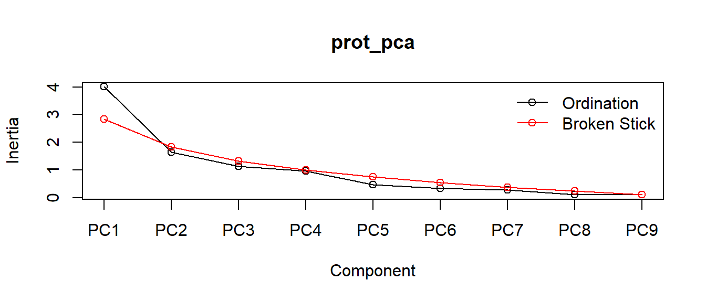
2. Графики факторных нагрузок и ординации
Параметр scaling
Внимание! Координаты объектов или переменных можно получить в нескольких вариантах, отличающихся масштабом. От этого масштаба будет зависеть интерпретация.
| scaling | Название графика | Масштаб | Расстояния между объектами | Углы между векторами |
|---|---|---|---|---|
| 1, sites | биплот расстояний | координаты объектов масштабированы (х корень из соб. чисел) | аппроксимируют евклидовы | нет смысла |
| 2, species | биплот корреляций | координаты признаков масштабированы (х корень из соб. чисел) | НЕ аппроксимируют евклидовы | отражают корреляции |
| 3, symmetric | масштабированы координаты объектов и признаков (х корень 4-й степени из соб. чисел) | |||
| 0, none | нет масштабирования |
Графики
op <- par(mfrow = c(1, 2))
# График факторных нагрузок
biplot(prot_pca, display = "species", scaling = "species")
# График факторных координат
biplot(prot_pca, display = "sites")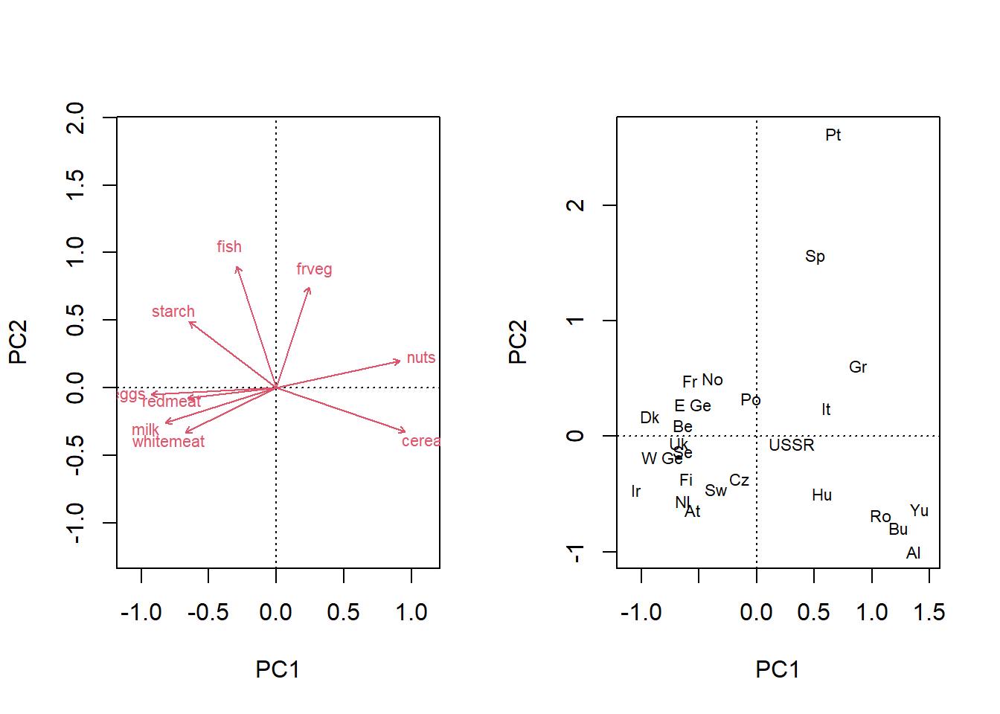
par(op)Те же самые графики можно построить в ggplot2
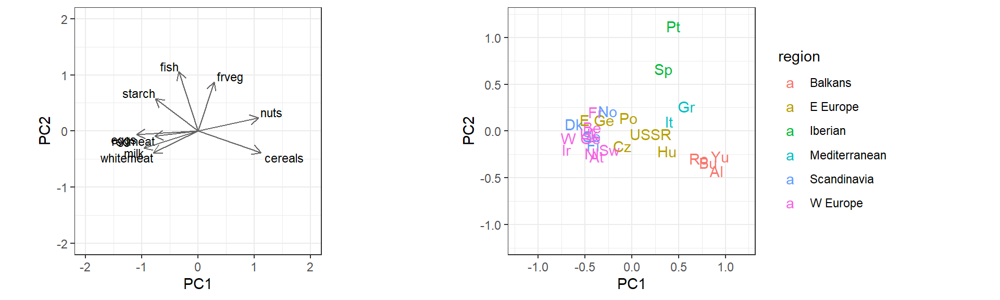
Исходный код графика нагрузок
# Данные для графиков
df_load <- as.data.frame(scores(prot_pca, display = "species",
choices = c(1, 2, 3), scaling = "species"))
# поправки для размещения подписей
df_load$hjust <- ifelse(df_load$PC1 >= 0, -0.1, 1)
df_load$vjust <- ifelse(df_load$PC2 >= 0, -0.1, 1)
library(grid) # для стрелочек
ar <- arrow(length = unit(0.25, "cm"))
## График нагрузок в ggplot
p_load <- ggplot(df_load) +
geom_text(aes(x = PC1, y = PC2, label = rownames(df_load)),
size = 3, vjust = df_load$vjust, hjust = df_load$hjust) +
geom_segment(aes(x = 0, y = 0, xend = PC1, yend = PC2),
colour = "grey40", arrow = ar) +
coord_equal(xlim = c(-2, 2), ylim = c(-2, 2))Исходный код графика ординации
## График ординации в ggplot
df_scores <- data.frame(protein[, 1:2],
scores(prot_pca, display = "sites", choices = c(1, 2, 3), scaling = "sites"))
p_scores <- ggplot(df_scores, aes(x = PC1, y = PC2, colour = region)) +
geom_text(aes(label = country)) +
coord_equal(xlim = c(-1.2, 1.2), ylim = c(-1.2, 1.2))3. Интерпретация компонент
Интерпретация компонент
Факторные нагрузки оценивают вклады переменных в изменчивость по главной компоненте
- Модуль значения нагрузки — величина вклада
- Знак значения нагрузки — направление вклада
scores(prot_pca, display = "species",
choices = c(1, 2, 3), scaling = 0)## PC1 PC2 PC3
## redmeat -0.303 -0.0563 -0.2976
## whitemeat -0.311 -0.2369 0.6239
## eggs -0.427 -0.0353 0.1815
## milk -0.378 -0.1846 -0.3857
## fish -0.136 0.6468 -0.3213
## cereals 0.438 -0.2335 0.0959
## starch -0.297 0.3528 0.2430
## nuts 0.420 0.1433 -0.0544
## frveg 0.110 0.5362 0.4076
## attr(,"const")
## [1] 3.83
- Т.е. первую компоненту можно назвать “Мясо – злаки и орехи”
Первая главная компонента:
Высокие положительные нагрузки по первой главной компоненте у переменных cereals и nuts. Значит, чем больше значение PC1, тем больше потребление этих продуктов.
Высокие отрицательные нагрузки у переменных eggs, milk, whitemeat, redmeat. Т.е., чем меньше значение PC1, тем больше их потребление.
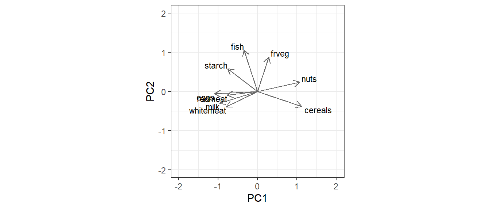
Интерпретация компонент
Факторные нагрузки оценивают вклады переменных в изменчивость по главной компоненте
- Модуль значения нагрузки — величина вклада
- Знак значения нагрузки — направление вклада
scores(prot_pca, display = "species",
choices = c(1, 2, 3), scaling = 0)## PC1 PC2 PC3
## redmeat -0.303 -0.0563 -0.2976
## whitemeat -0.311 -0.2369 0.6239
## eggs -0.427 -0.0353 0.1815
## milk -0.378 -0.1846 -0.3857
## fish -0.136 0.6468 -0.3213
## cereals 0.438 -0.2335 0.0959
## starch -0.297 0.3528 0.2430
## nuts 0.420 0.1433 -0.0544
## frveg 0.110 0.5362 0.4076
## attr(,"const")
## [1] 3.83
- Т.е. вторую компоненту можно назвать “Рыба и овощи”
Вторая главная компонента:
Высокие положительные нагрузки по второй главной компоненте у переменных fish, frveg. Значит, чем больше значение PC2, тем больше потребление рыбы, овощей.
Высоких отрицательных нагрузок по второй главной компоненте нет ни у одной из переменных.

PCA и другие методы
PCA
- Метод обучения “без учителя” (unsupervised learning)
- Все переменные-признаки равноправны
- Задачи:
- описать сходство объектов
- снизить размерность данных
- интерпретировать связи между переменными
- Главные компоненты — линейные комбинации переменных, задающие направления максимального варьирования исходных данных.
Линейная регрессия
- Метод обучения “с учителем” (supervised learninig)
- Переменные делятся на зависимые (один или несколько откликов) и независимые (предикторы)
- Задачи:
- описать зависимость значений отклика от предикторов
- предсказать значения отклика при известных значениях предикторов
- Линия регрессии — направление, вдоль которого минимален разброс значений зависимой переменной (сумма квадратов остатков).
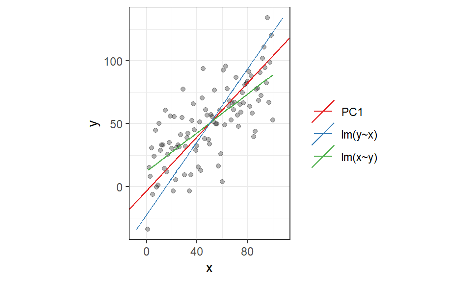
PCA
PCA представляет многомерные данные в пространстве независимых осей, ранжированных по важности, поэтому есть возможность оставить только самые важные оси изменчивости.
Расстояния между объектами на любой ординации PCA соответствуют их евклидовым расстояниям в пространстве главных компонент.
Исходные признаки — количественные переменные, связанные друг с другом линейно. Для описания различий между такими объектами подходит евклидово расстояние.
nMDS
nMDS пытается найти отображение многомерного пространства в заданном числе измерений (например, на плоскости) с максимальным сохранением информации из всех измерений.
Ранги расстояний между объектами на nMDS будут соответствовать их рангам в исходной матрице различий.
Исходные признаки могут быть любыми, т.к. может быть использована любая мера различий между объектами.
Результаты PCA и nMDS будут похожи, если для nMDS-ординации использовано евклидово расстояние
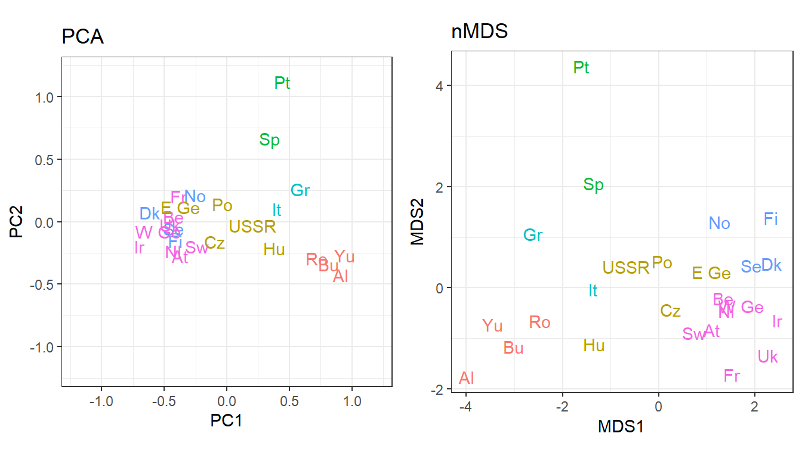
Создание составных переменных при помощи PCA
Создание составных переменных
Факторные координаты — это новые составные признаки, которых можно использовать вместо исходных переменных
Свойства факторных координат:
- Среднее = 0, Дисперсия = 1
- Не коррелируют друг с другом
Применение:
- Уменьшение числа зависимых переменных — для дисперсионного анализа
- Уменьшение числа предикторов — во множественной регрессии
## PC1 PC2 PC3
## Al 0.9091 -0.4253 -0.4594
## At -0.3711 -0.2716 0.3490
## Be -0.4231 0.0416 0.0565
## Bu 0.8175 -0.3394 0.0395
## Cz -0.0966 -0.1572 0.3120
## Dk -0.6170 0.0745 -0.1962При помощи дисперсионного анализа можно проверить, различается ли значение первой главной компоненты (“Мясо – злаки и орехи”) между разными регионами Европы
# Значения факторов (= факторные координаты)
df <- data.frame(region = protein$region,
scores(prot_pca, display = "sites", choices = c(1, 2, 3), scaling = "sites"))
mod <- lm(PC1 ~ region, data = df)
anova(mod)## Analysis of Variance Table
##
## Response: PC1
## Df Sum Sq Mean Sq F value Pr(>F)
## region 5 5.97 1.19 39.3 0.0000000022 ***
## Residuals 19 0.58 0.03
## ---
## Signif. codes: 0 '***' 0.001 '**' 0.01 '*' 0.05 '.' 0.1 ' ' 1
- Регионы Европы различаются по потреблению мяса, злаков и орехов
Проверка условий применимости дисперсионного анализа
## `geom_smooth()` using formula 'y ~ x'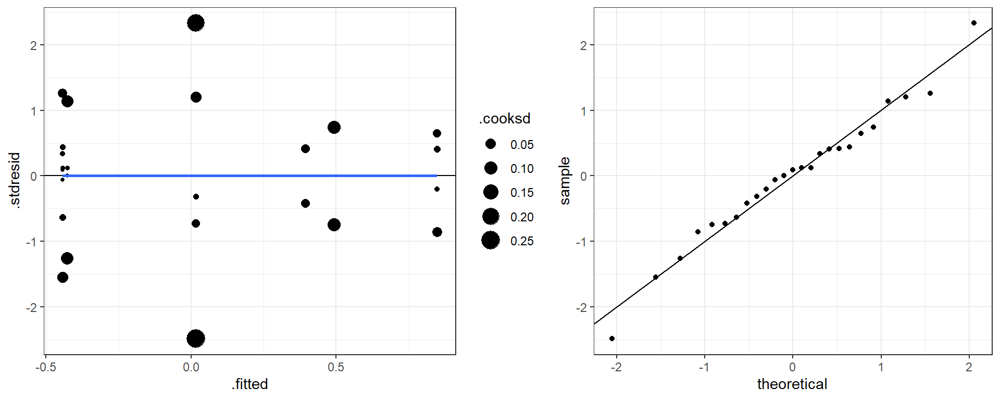
- Условия применимости дисперсионного анализа выполняются
График значений первой компоненты по регионам
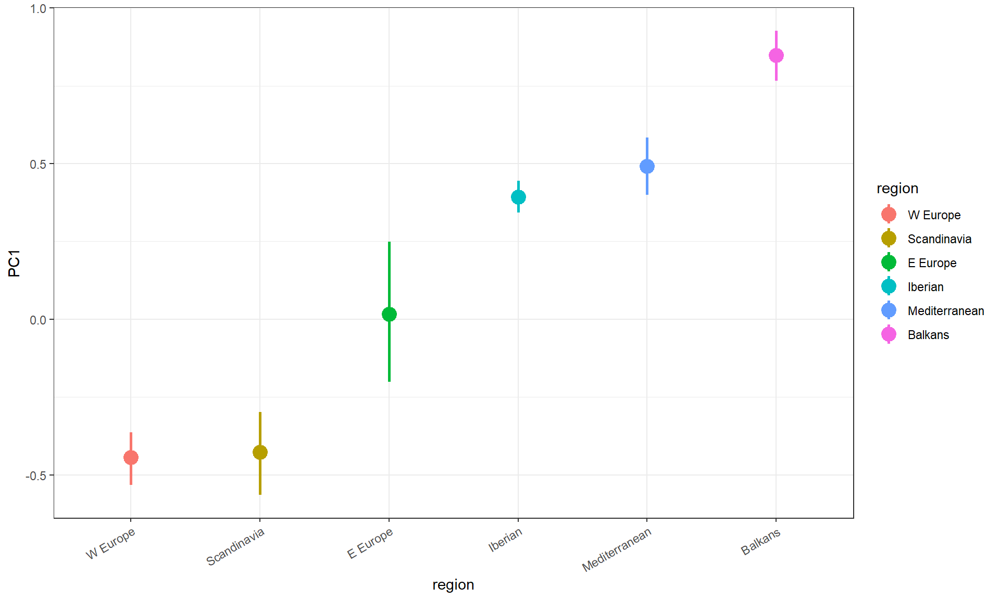
Пост-хок тест
TukeyHSD(aov(mod))## Tukey multiple comparisons of means
## 95% family-wise confidence level
##
## Fit: aov(formula = mod)
##
## $region
## diff lwr upr p adj
## E Europe-Balkans -0.8307 -1.2001 -0.4614 0.000
## Iberian-Balkans -0.4541 -0.9309 0.0227 0.067
## Mediterranean-Balkans -0.3555 -0.8323 0.1214 0.221
## Scandinavia-Balkans -1.2740 -1.6633 -0.8847 0.000
## W Europe-Balkans -1.2905 -1.6276 -0.9533 0.000
## Iberian-E Europe 0.3766 -0.0840 0.8372 0.150
## Mediterranean-E Europe 0.4753 0.0146 0.9359 0.041
## Scandinavia-E Europe -0.4433 -0.8126 -0.0740 0.013
## W Europe-E Europe -0.4597 -0.7736 -0.1459 0.002
## Mediterranean-Iberian 0.0987 -0.4519 0.6492 0.992
## Scandinavia-Iberian -0.8199 -1.2967 -0.3431 0.000
## W Europe-Iberian -0.8363 -1.2716 -0.4011 0.000
## Scandinavia-Mediterranean -0.9186 -1.3954 -0.4418 0.000
## W Europe-Mediterranean -0.9350 -1.3703 -0.4998 0.000
## W Europe-Scandinavia -0.0164 -0.3536 0.3207 1.000Take-home messages
- Применение метода главных компонент (PCA):
- снижение размерности данных
- исследование связей между переменными
- построение ординации объектов
- создание комплексных переменных
- Терминология:
- Собственные числа — вклад компонент в общую изменчивость
- Факторные нагрузки — корреляции исходных переменных с компонентами — используются для интерпретации
- Значения факторов — новые координаты объектов в пространстве уменьшенной размерности
Что почитать
- Borcard, D., Gillet, F., Legendre, P., 2011. Numerical ecology with R. Springer.
- Legendre, P., Legendre, L., 2012. Numerical ecology. Elsevier.
- Oksanen, J., 2011. Multivariate analysis of ecological communities in R: vegan tutorial. R package version 2–0.
- The Ordination Web Page http://ordination.okstate.edu/ (accessed 05.04.17).
- Quinn, G.G.P., Keough, M.J., 2002. Experimental design and data analysis for biologists. Cambridge University Press.
- Zuur, A.F., Ieno, E.N., Smith, G.M., 2007. Analysing ecological data. Springer.

multivar by Marina Varfolomeeva, Vadim Khaitov, and Yuta tamberg is licensed under a Creative Commons Attribution-NonCommercial-ShareAlike 4.0 International License.